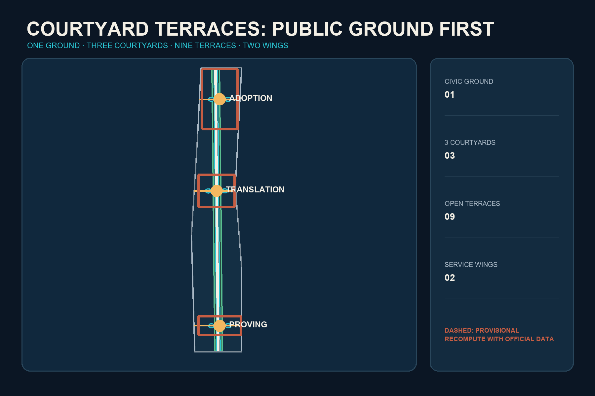
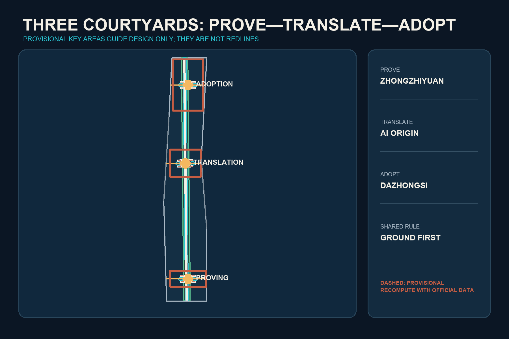
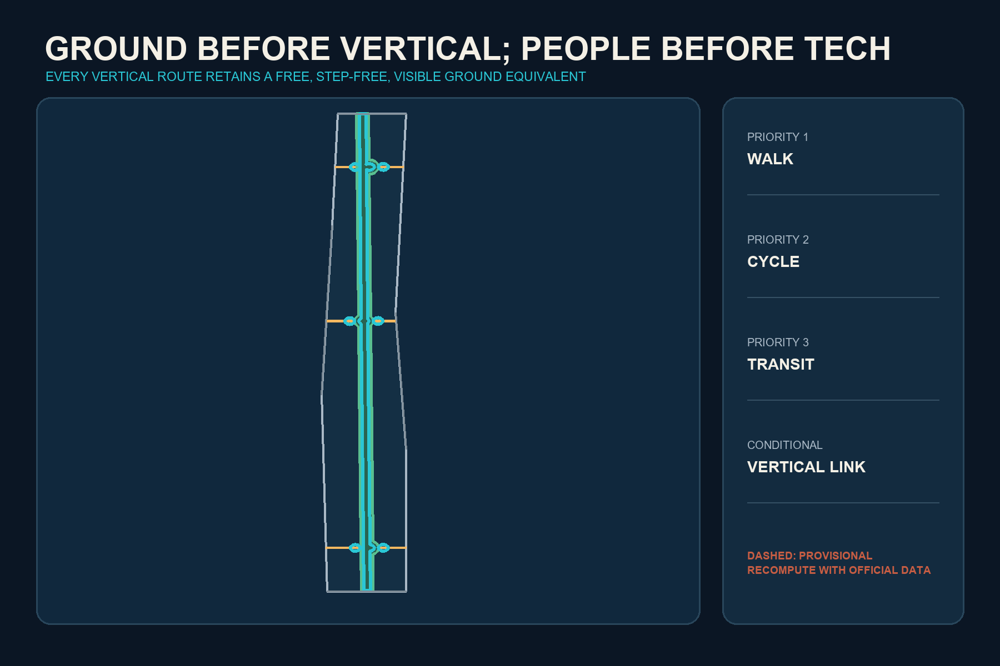
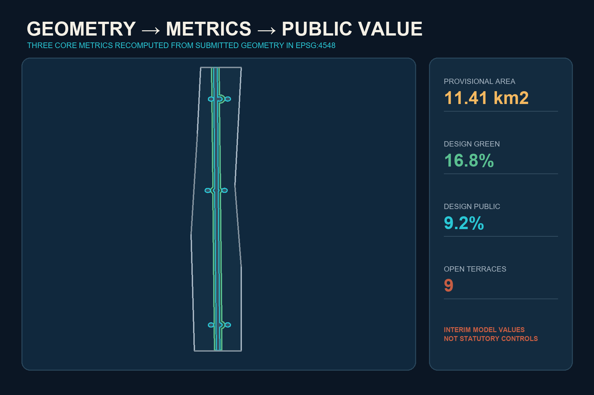

中国 / China
Courtyard commons, Jing-Zhang engineering autonomy, Zhongguancun knowledge translation
A synthesis of Chinese courtyards, Western collegiate quads and Hong Kong vertical efficiency: One Ground, Three Courtyards, Nine Terraces and Two Wings.

Courtyard commons, Jing-Zhang engineering autonomy, Zhongguancun knowledge translation
Collegiate quads, complete blocks, open innovation and disclosed public rights
Transit integration, vertical mix and weather protection - repaired for sealed podiums, over-density and gated access

Compute / Standards / Safety
Open Source / Co-learning / Daily Life
Pitch / Market / International

Model red-teaming, edge-compute carbon accounting and slow urban robotics; closed, semi-open and reversible public stages.
Open-source release, learning, care, multilingual reception, repair, compliance support, accessible navigation, heritage sound and maintenance. Every service retains human and offline equivalence.

Continuous, free, visible and step-free, remaining usable when AI or lifts fail.
Official geometry triggers regeneration of every layer, metric, figure, HTML and PDF.
FAR, height, redlines, ownership, utilities and building actions remain pending professional confirmation.